Shakshat Virtual Lab 
INDIAN INSTITUTE OF TECHNOLOGY GUWAHATI
Why linear prediction analysis is important in speech?
Speech signal is produced by the convolution of excitation source and time varying vocal tract system components. These excitation and vocal tract components are to be separated from the available speech signal to study these components independently . For deconvolving the given speech into excitation and vocal tract system components, methods based on homomorphic analysis like cepstral analysis are developed. As the cepstral analysis does the deconvolution of speech into source and system components by traversing through frequency domain, the deconvolution task becomes computational intensive process. To reduce such type of computational complexity and finding the source and system components from time domain itself, the Linear Prediction analysis is developed.
Basics of LP Analysis
The redundancy in the speech signal is exploited in the LP analysis. The prediction of current sample as a linear combination of past p samples form the basis of linear prediction analysis where p is the order of prediction. The predicted sample s^(n) can be represented as follows,
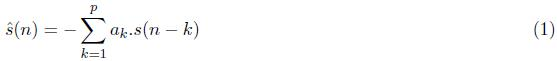
where aks are the linear prediction coefficients and s(n) is the windowed speech sequence obtained by multiplying short time speech frame with a hamming or similar type of window which is given by,
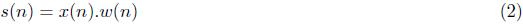where ω(n) is the windowing sequence. The prediction error e(n) can be computed by the difference between actual sample s(n)and the predicted sample s^(n) which is given by,
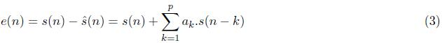
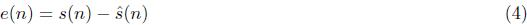
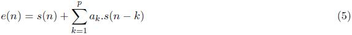
The primary objective of LP analysis is to compute the LP coefficients which minimized the prediction error e(n). The popular method for computing the LP coefficients by least squares auto correlation method. This achieved by minimizing the total prediction error. The total prediction error can be represented as follows
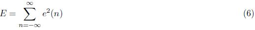
This can be expanded using the equation (5) as follows,
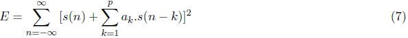
The values of aks which minimize the total prediction error E can be computed by finding
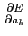
and equating to zero for k=0,1,2,...p.
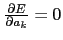
for each ak give p linear equations with p unknowns. The solution of which gives the LP coefficients. This can be represented as follows,
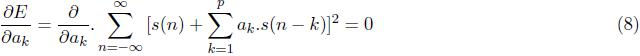
The differentiated expression can be written as,
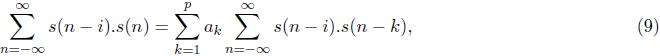
where i=1, 2, 3...p. The equation (9) can be written in terms of autocorrelation sequence R(i) as follows,
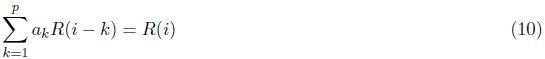
for i=1,2,3...p.
Where the autocorrelation sequence used in equation (10) can be written as follows,
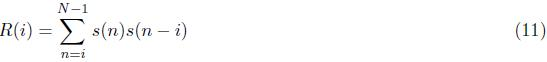
for i= 1,2,3...p and N is the length of the sequence.
This can be represented in the matrix form as follows,
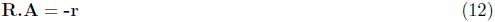
where R is the pXp symmetric matrix of elements R(i, k) = R(|i-k|), (1<=i, k<=p), r is a column vector with elements (R(1),R(2), ...R(P)) and finally A is the column vector of LPC coefficients (a(1), a(2), ....a(p)). It can be shown that R is toeplitz matrix which can be represented as,
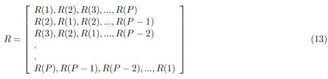
The LP coefficients can be computed as shown,
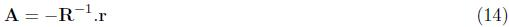
where R-1 is the inverse of the matrix R
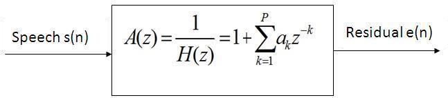
Figure 1: Computing the LP residual by inverse filtering
Computing LP Residual
TLP residual is the prediction error e(n) obtained as the difference between the predicted speech sample s^(n) and the current sample s(n). This is shown in equation (4).
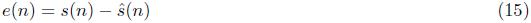
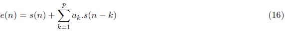
In the frequency domain, the equation (16) can be represented as,
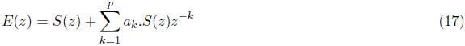
i.e.

So LP residual can be obtained filtering the speech signal with A(z) as indicated in figure 1. Similarly it can be shown that the LP spectrum H(z) as,
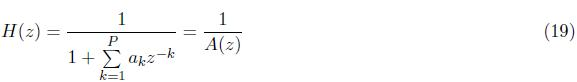
As A(z) is the reciprocal of H(z), LP residual is obtained by the inverse filtering of speech.
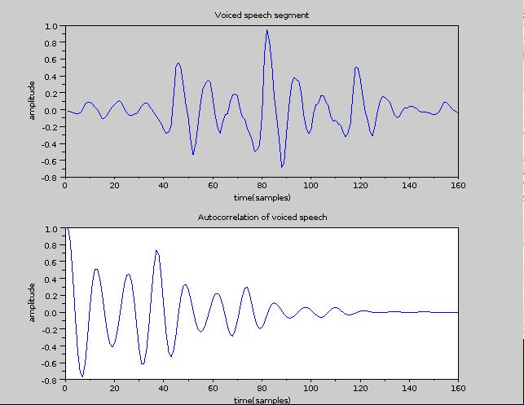
Figure 2: Computation of LP residual
n the similar manner, speech can be reconstructed from the LP residual by filtering using H(z) as shown in figure 3.
.jpg)
Figure 3: Reconstruction of the speech signals using residual by LP filtering
Estimating vocaltract parameters by LP analysis
LP analysis separates the given short term sequence of speech into its slowly varying vocal tract component represented by LP filter (H(z)) and fast varying excitation component given by the LP residual (e(n)). The LP filter (H(z)) induces the desired spectral shape for the shape on the flat spectrum (E(z)) of the noise like excitation sequence as given in equation (20). As the LP spectrum provides the vocaltract characteristics, the vocaltract resonances (formants) can be estimated from the LP spectrum. Various formant locations can be obtained by picking the peaks from the magnitude LP spectrum (|H(z)|). The figure 4 shows the first (F1), second (F2) and third formant (F3) frequencies estimated from the peaks in the LP magnitude spectrum.
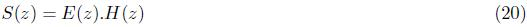
where S(z) is the spectrum of the given short time speech signal.
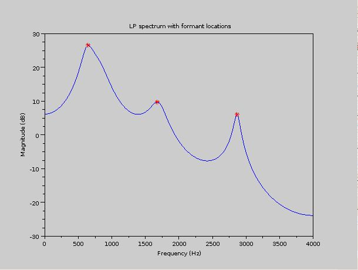
Figure 4: Formant locations corresponding to peaks in LP magnitude spectrum
Estimating pitch from LP residual
As the LP residual is an error signal obtained by the LP analysis, it is noisy in nature. Figure 5 shows a 20 msec segment of residual and corresponding speech segments from which it is obtained. As the pitch marks are characterized by the sharp and periodic discontinuity, it cause a large error in the computed LP residual. This large error can be observed in the Figure 5 . So the periodicity of the error gives the pitch period of that segment of speech and this can be computed by the autocorrelation method. It has to be noted that for unvoiced speech signal the residual will be like random noise without any periodicity.

Figure 5:The speech and residual of 20 ms voiced speech segments
Normalized Error
The normalized error can be used to find the optimal prediction order required for the LP analysis of the given speech segment. The normalized error can be defined as the ratio of the total minimum error to the total energy of the signal. If Ep is the total minimum error obtained for a prediction order p and R(1) is the total energy of the signal, then the normalized error Vp can be represented as,
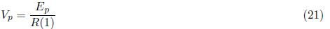
By combining equations (7) and (9), the expression for total minimum error for the given prediction order p can be given by,

This can be written in terms of autocorrelation sequence,
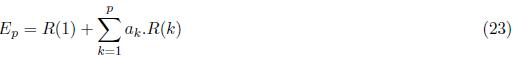
Figure 6 shows the normalized error curve obtained by plotting the normalized error computed using the equation (21) versus the prediction order. It has to be observed from the figure that there is no significant reduction in the normalized error after certain P. Hence the normalized error curve helps to choose the optimum prediction order for the LP analysis.
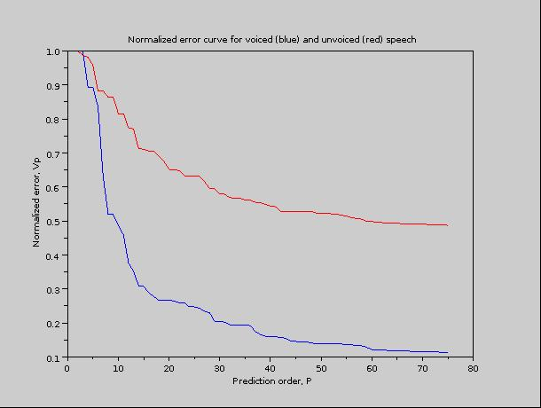
Figure 6: Normalized error curve of voiced (blue) and unvoiced (red) speech